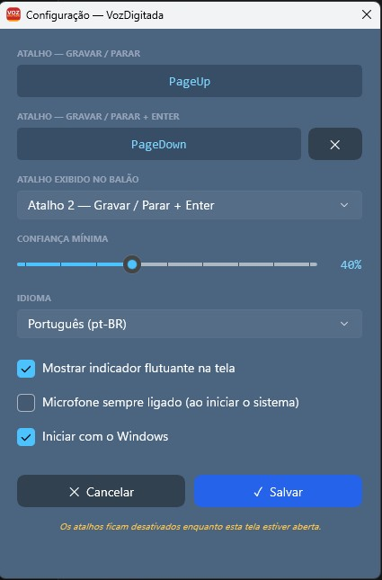
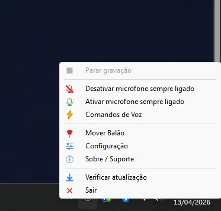

Transforme sua
voz em texto
instantaneamente.
O VozDigitada transforma sua voz em texto no campo ativo de qualquer programa. Pressione um atalho para gravar e o texto aparece em tempo real. Tem Enter automático, microfone sempre ligado, comandos de voz, dicionário inteligente e um balão flutuante que mostra o status.






Reconhecimento de Voz
Captura sua voz e digita automaticamente no campo ativo de qualquer programa com precisão.
Atalhos de Teclado
Um atalho para gravar e parar, outro para gravar, parar e enviar (Enter automático). Totalmente configurável.
Comandos de Voz
Controle por voz: "Voz gravar", "Voz parar", "Voz enviar" e outros — sem tocar no teclado.
Microfone Sempre Ligado
Ative o microfone permanente e controle tudo por comandos de voz. Pode desativar temporariamente quando quiser.
Dicionário Inteligente
Corrija palavras que o reconhecimento erra e o app aprende. Exportar, importar e backup automático na nuvem.
Balão Flutuante Móvel
Um balão na tela indica o status da gravação. Arraste para qualquer posição — ele lembra onde você deixou.
Atualização Automática
O app verifica e baixa atualizações automaticamente. Sempre na última versão disponível.
Configuração Completa
Personalize atalhos, idioma, sensibilidade do reconhecimento e comportamento do balão indicador.
Inicia com Windows
Configure para iniciar automaticamente com o sistema, já com o microfone sempre ligado se preferir.
De um problema, nasceu a solução
Eu usava um aplicativo de voz para texto no dia a dia. Era excelente, mas tinha assinatura mensal e faltavam recursos como comandos de voz, Enter automático e microfone sempre ligado.
Como sou programador, decidi criar o meu próprio — e ainda disponibilizar de graça.
O VozDigitada nasceu dessa ideia. Um app mais simples, focado em português, com os recursos que eu sentia falta. Feito por quem realmente usa, para quem realmente precisa.
Sim! O VozDigitada digita no campo ativo de qualquer programa do Windows — navegadores, editores de texto, WhatsApp Web, Excel, e-mail, ERPs, terminais e mais. Basta o cursor estar posicionado em um campo de texto.
Não. O VozDigitada usa o Windows Speech Recognition, que funciona 100% offline. Todo o processamento de voz acontece localmente no seu computador — nenhum áudio é enviado para a internet.
100% gratuito, sem limite de palavras, sem assinatura, sem período de teste e sem anúncios. Você pode usar o quanto quiser, para sempre.
Você configura dois atalhos: um para gravar/parar normalmente, e outro que grava, para e envia (pressiona Enter automaticamente). Ideal para chat, WhatsApp Web e campos de busca — fale e envie sem tocar no teclado.
É um modo onde o microfone fica permanentemente ativo, aguardando comandos de voz. Você controla tudo falando: "Voz gravar", "Voz parar", "Voz enviar" — sem precisar tocar no teclado em momento algum.
Quando o reconhecimento de voz erra uma palavra, você cadastra a correção no dicionário. Na próxima vez, o app corrige automaticamente. Funciona com palavras individuais e frases de até 3 palavras. Você pode exportar, importar e fazer backup automático.
Sim! O VozDigitada foi feito focado em português brasileiro. Também funciona em outros idiomas que o Windows Speech Recognition suporta (inglês, espanhol, etc.), configurável nas opções.
O VozDigitada não coleta nenhum dado pessoal, não envia áudio para servidores e não possui telemetria. Todo o processamento é local. O código é transparente e o app está disponível na Microsoft Store.
⬇️ VozDigitada para Windows
❤️ Gostou? Apoie o projeto!
O VozDigitada é 100% gratuito e sem anúncios.
Se ele te ajuda no dia a dia, considere fazer uma doação de qualquer valor.
Pix
Cartão de Crédito / Débito

Pagamento seguro via Mercado Pago.
Você será redirecionado para o site oficial.
PayPal
Pagamento seguro via PayPal.
Você será redirecionado para o site oficial.
Fale Comigo
Meu objetivo é criar ferramentas que melhorem seu dia a dia.
Se tiver alguma dúvida, sugestão ou precisar de ajuda,
ficarei feliz em responder!